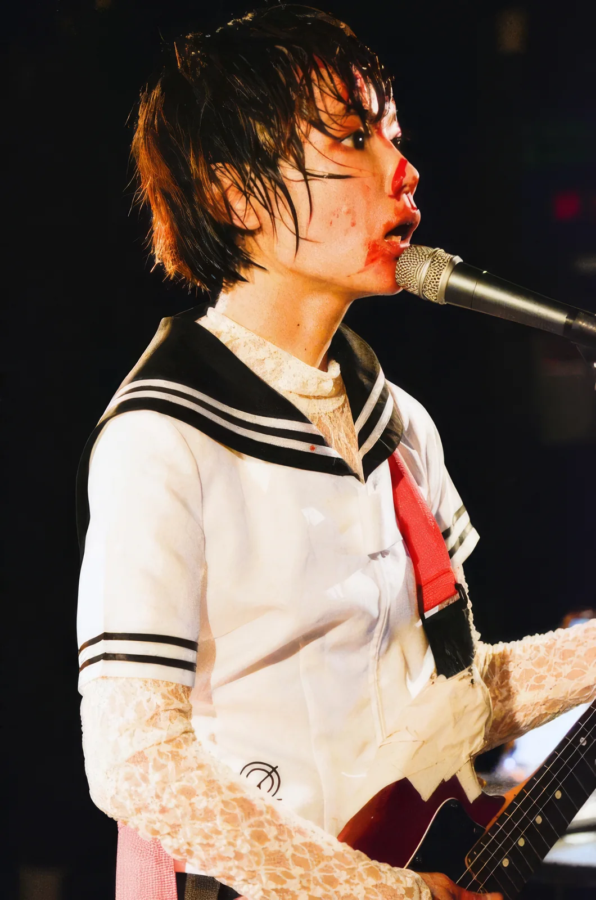

02 / Pressing / EditorialSpeculative issue / Repertory PressingSound, documented.
Marquee / Subject-led photography
Midori: the subject before the signature.
An imagined editorial program involving Midori and Gyuune Cassette tests how an independent, abrasive musical identity can sit within a careful publishing system without being softened into generic institutional polish.
The decisionRetain the original color and atmosphere of the performance. Marquee provides Repertory’s attribution and information hierarchy, not a substitute aesthetic for the artist.
Context and status
Fictional collaboration and restoration concepts, not an announced label relationship or a completed 4K concert restoration. Photography is a design-study reference.